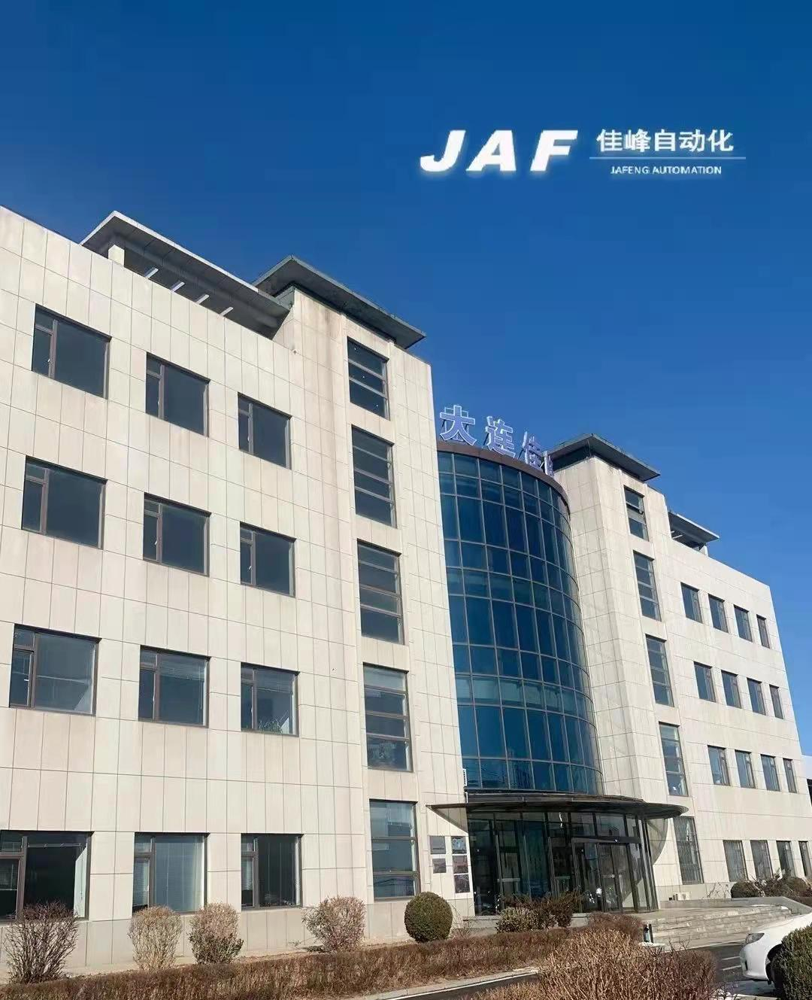

公司简介

大连佳峰自动化股份有限公司成立于2001年，是国内首批研发、制造半导体后道封装设备的高新技术企业。
公司目前是工信部重点支持的国家专精特新“小巨人”企业、辽宁省瞪羚企业、是大规模集成电路封装设备国家地方联合工程研究中心依托单位，是大连市集成电路封装装备创新中心发起单位。牵头制定了《GB/T41213-2021集成电路用全自动装片机》国家标准。
公司先后承担了多项国家02专项及省市级项目，填补了多项国内IC后道封装设备的空白；
公司所研发的产品先后获得了，国家重点新产品奖等省部级奖项十余项，获得发明专利授权、实用新型专利授权、软件著作权登记等知识产权近百项，公司主导的产品，“软焊料贴片机”在细分领域上已处于国内龙头地位。其他机型设备也得到了国内多家知名封装厂的认可和好评。
公司自成立以来，始终以“振兴民族企业，创集成电路封装设备的国际一流品牌”为使命和愿景，坚持“客户至上，品质第一，全员经营，共同发展”的经营理念。秉持和发扬“诚信、创新、拼搏、共赢”的企业精神。经过二十余年的拼搏发展，公司现已成为行业的佼佼者，拥有国内外客户200余家，国内客户市场占有率逐年提升，并得到多家国内外知名大客户的信赖和支持。
未来，佳峰将一如既往，坚持不懈的“拼搏”和“创新”，以优质的产品与技术服务，成为客户首选品牌。